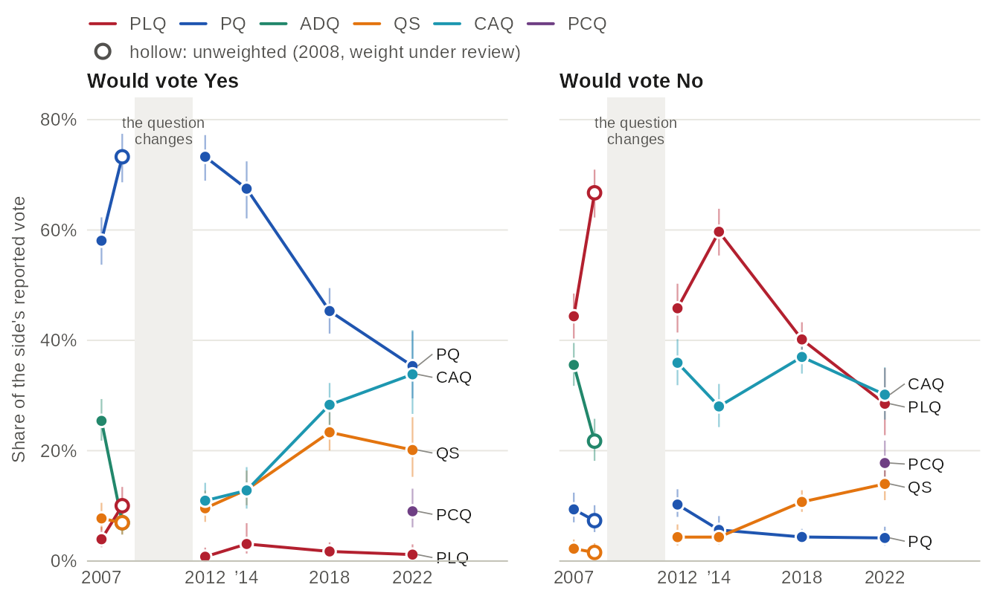
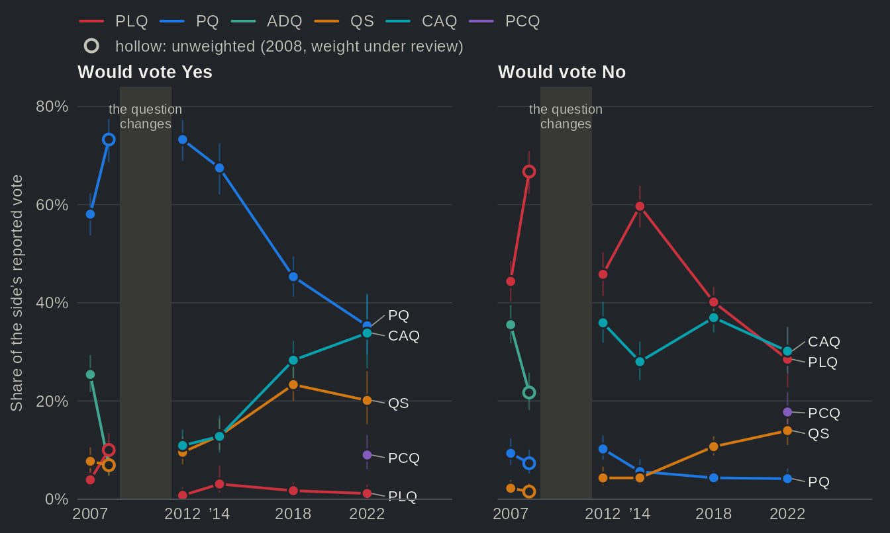

Two dimensions of competition: sovereignty and left-right
Source:vignettes/articles/dimensions.Rmd
dimensions.RmdFor forty years the PQ and the PLQ split Quebec on the national question. The Quebec Election Studies show that this axis no longer sorts the parties the way it did. In 2012, 84% of PQ voters would have voted Yes to an independent country, against 1% of PLQ voters. By 2022 the Yes vote was split: the PQ took 35% of it, Québec solidaire 20% and the CAQ 34%, while in 2012 the PQ alone took 73%. On the left-right scale, Québec solidaire’s voters are the furthest left (3.7 out of 10 in 2022) and the Conservatives’ the furthest right (6.7).
The data
Three harmonized variables: the pooled reported vote, the pooled
referendum vote (sov_support) and the self-placement on the
left-right scale (lr_self, 0 to 10):
h <- qes_harmonize(
studies = qz_studies,
targets = c("vote_choice", "sov_support", "lr_self"),
types = list(vote_choice = "recall"),
missing = "reasons", quiet = TRUE
)lr_self was asked in the Quebec Election Studies of 2012
to 2022; in 2022 it and the referendum question were asked during the
campaign, the reported vote after the election, so the page keeps the
respondents of both waves and weights them with the post-election
weight. For one party in one study:
d22 <- qes_design(h[h$study == "qes2022", ], weight = "weight_post")
svyby(~lr_self, ~vote_choice, subset(d22, vote_choice %in% c("CAQ", "QS")),
svymean, na.rm = TRUE)
#> vote_choice lr_self se
#> CAQ CAQ 5.549020 0.09808683
#> QS QS 3.658518 0.19725417Party electorates on two axes, 2012 to 2022


Source: qesR, pooled vote_choice (reported vote) and sov_support (independence), lr_self; QES 2012, 2014, 2018 and 2022, weighted with each study's post-election weight. The parties are set side by side at each election. Lines: 95% confidence intervals (logit for the share, Wald for the mean). The two panels have their own scales. The PCQ was listed in 2022 only.
Table view
| Party | Election | Study | Left-right, mean [95% CI] | n (left-right) | Yes, % [95% CI] | n (Yes/No) | Weighting |
|---|---|---|---|---|---|---|---|
| PLQ | 2012 | QES 2012 | 6.52 [6.24, 6.79] | 228 | 1.3 [0.4, 4.0] | 269 | weighted |
| PLQ | 2014 | QES 2014 | 6.29 [6.01, 6.56] | 393 | 2.9 [1.3, 6.5] | 482 | weighted |
| PLQ | 2018 | QES 2018 | 5.92 [5.68, 6.16] | 432 | 2.5 [1.3, 4.8] | 477 | weighted |
| PLQ | 2022 | QES 2022 | 4.80 [4.19, 5.42] | 140 | 2.2 [0.8, 5.7] | 141 | weighted |
| PQ | 2012 | QES 2012 | 4.39 [4.16, 4.61] | 422 | 84.5 [80.4, 87.8] | 448 | weighted |
| PQ | 2014 | QES 2014 | 4.67 [4.28, 5.06] | 289 | 87.4 [82.2, 91.3] | 299 | weighted |
| PQ | 2018 | QES 2018 | 4.56 [4.33, 4.78] | 342 | 85.9 [81.6, 89.4] | 344 | weighted |
| PQ | 2022 | QES 2022 | 4.52 [4.25, 4.79] | 204 | 82.0 [74.6, 87.6] | 174 | weighted |
| QS | 2012 | QES 2012 | 3.11 [2.68, 3.53] | 89 | 62.6 [49.4, 74.1] | 87 | weighted |
| QS | 2014 | QES 2014 | 3.41 [2.93, 3.88] | 118 | 63.4 [52.3, 73.3] | 110 | weighted |
| QS | 2018 | QES 2018 | 3.70 [3.42, 3.98] | 302 | 56.2 [49.8, 62.4] | 280 | weighted |
| QS | 2022 | QES 2022 | 3.66 [3.27, 4.05] | 207 | 43.8 [34.8, 53.2] | 171 | weighted |
| CAQ | 2012 | QES 2012 | 6.29 [6.04, 6.55] | 261 | 18.8 [14.5, 24.0] | 298 | weighted |
| CAQ | 2014 | QES 2014 | 5.68 [5.39, 5.98] | 223 | 21.0 [15.7, 27.4] | 244 | weighted |
| CAQ | 2018 | QES 2018 | 6.00 [5.82, 6.17] | 601 | 31.0 [27.1, 35.3] | 574 | weighted |
| CAQ | 2022 | QES 2022 | 5.55 [5.36, 5.74] | 351 | 37.8 [29.9, 46.4] | 300 | weighted |
| PCQ | 2022 | QES 2022 | 6.73 [6.38, 7.07] | 143 | 21.5 [14.9, 30.1] | 137 | weighted |
What to notice:
- PQ and QS voters are the sovereigntist ones; PLQ voters are almost all federalists at every election (2% Yes in 2022).
- The two newer parties moved toward each other on sovereignty: CAQ voters from 19% Yes in 2012 to 38% in 2022, QS voters from 63% to 44%.
- PLQ voters moved left, from 6.5 to 4.8; the voters right of centre are now those of the CAQ and the PCQ.
- PQ and QS voters are close on left-right (1.3 points apart in 2012, 0.9 in 2022), but their gap on sovereignty grew from 22 to 38 points: the national question now separates them more than the left-right scale.
Where sovereigntists and federalists vote


Source: qesR, pooled vote_choice (reported vote) and sov_support; QES 2007 to 2022, weighted with each study's post-election weight except 2008 (hollow: unweighted, weight under review). 2007 and 2008 asked the 1995 question, 2012 to 2022 about an independent country, so the lines break at the change. Lines: 95% confidence intervals (logit). The other parties (PV, ON and others) are in the table view.
Table view
| Election | Study | Referendum vote | Party | Share of reported vote [95% CI] | n | Weighting |
|---|---|---|---|---|---|---|
| 2007 | QES 2007 | Yes | PLQ | 3.9 [2.5, 6.2] | 735 | weighted |
| 2007 | QES 2007 | Yes | PQ | 58.1 [53.7, 62.3] | 735 | weighted |
| 2007 | QES 2007 | Yes | ADQ | 25.4 [21.8, 29.4] | 735 | weighted |
| 2007 | QES 2007 | Yes | QS | 7.7 [5.6, 10.5] | 735 | weighted |
| 2007 | QES 2007 | Yes | CAQ | — | 735 | weighted |
| 2007 | QES 2007 | Yes | PCQ | — | 735 | weighted |
| 2007 | QES 2007 | Yes | Other | 4.9 [3.4, 7.0] | 735 | weighted |
| 2007 | QES 2007 | No | PLQ | 44.4 [40.3, 48.5] | 913 | weighted |
| 2007 | QES 2007 | No | PQ | 9.4 [7.0, 12.4] | 913 | weighted |
| 2007 | QES 2007 | No | ADQ | 35.5 [31.8, 39.5] | 913 | weighted |
| 2007 | QES 2007 | No | QS | 2.2 [1.3, 3.9] | 913 | weighted |
| 2007 | QES 2007 | No | CAQ | — | 913 | weighted |
| 2007 | QES 2007 | No | PCQ | — | 913 | weighted |
| 2007 | QES 2007 | No | Other | 8.5 [6.3, 11.3] | 913 | weighted |
| 2008 | QES 2008 | Yes | PLQ | 10.0 [7.4, 13.4] | 389 | unweighted (weight under review) |
| 2008 | QES 2008 | Yes | PQ | 73.3 [68.6, 77.4] | 389 | unweighted (weight under review) |
| 2008 | QES 2008 | Yes | ADQ | 6.9 [4.8, 9.9] | 389 | unweighted (weight under review) |
| 2008 | QES 2008 | Yes | QS | 6.9 [4.8, 9.9] | 389 | unweighted (weight under review) |
| 2008 | QES 2008 | Yes | CAQ | — | 389 | unweighted (weight under review) |
| 2008 | QES 2008 | Yes | PCQ | — | 389 | unweighted (weight under review) |
| 2008 | QES 2008 | Yes | Other | 2.8 [1.6, 5.0] | 389 | unweighted (weight under review) |
| 2008 | QES 2008 | No | PLQ | 66.7 [62.3, 70.9] | 451 | unweighted (weight under review) |
| 2008 | QES 2008 | No | PQ | 7.3 [5.2, 10.1] | 451 | unweighted (weight under review) |
| 2008 | QES 2008 | No | ADQ | 21.7 [18.2, 25.8] | 451 | unweighted (weight under review) |
| 2008 | QES 2008 | No | QS | 1.6 [0.7, 3.2] | 451 | unweighted (weight under review) |
| 2008 | QES 2008 | No | CAQ | — | 451 | unweighted (weight under review) |
| 2008 | QES 2008 | No | PCQ | — | 451 | unweighted (weight under review) |
| 2008 | QES 2008 | No | Other | 2.7 [1.5, 4.6] | 451 | unweighted (weight under review) |
| 2012 | QES 2012 | Yes | PLQ | 0.8 [0.2, 2.4] | 529 | weighted |
| 2012 | QES 2012 | Yes | PQ | 73.3 [68.9, 77.2] | 529 | weighted |
| 2012 | QES 2012 | Yes | ADQ | — | 529 | weighted |
| 2012 | QES 2012 | Yes | QS | 9.6 [7.1, 12.8] | 529 | weighted |
| 2012 | QES 2012 | Yes | CAQ | 10.9 [8.4, 14.2] | 529 | weighted |
| 2012 | QES 2012 | Yes | PCQ | n.l. | 529 | weighted |
| 2012 | QES 2012 | Yes | Other | 5.5 [3.9, 7.7] | 529 | weighted |
| 2012 | QES 2012 | No | PLQ | 45.8 [41.4, 50.3] | 635 | weighted |
| 2012 | QES 2012 | No | PQ | 10.2 [8.0, 13.0] | 635 | weighted |
| 2012 | QES 2012 | No | ADQ | — | 635 | weighted |
| 2012 | QES 2012 | No | QS | 4.3 [2.8, 6.6] | 635 | weighted |
| 2012 | QES 2012 | No | CAQ | 35.9 [31.9, 40.2] | 635 | weighted |
| 2012 | QES 2012 | No | PCQ | n.l. | 635 | weighted |
| 2012 | QES 2012 | No | Other | 3.7 [2.4, 5.6] | 635 | weighted |
| 2014 | QES 2014 | Yes | PLQ | 3.1 [1.4, 6.9] | 416 | weighted |
| 2014 | QES 2014 | Yes | PQ | 67.5 [62.1, 72.4] | 416 | weighted |
| 2014 | QES 2014 | Yes | ADQ | — | 416 | weighted |
| 2014 | QES 2014 | Yes | QS | 12.9 [10.1, 16.4] | 416 | weighted |
| 2014 | QES 2014 | Yes | CAQ | 12.8 [9.5, 17.0] | 416 | weighted |
| 2014 | QES 2014 | Yes | PCQ | n.l. | 416 | weighted |
| 2014 | QES 2014 | Yes | Other | 3.7 [2.0, 6.7] | 416 | weighted |
| 2014 | QES 2014 | No | PLQ | 59.7 [55.4, 63.8] | 756 | weighted |
| 2014 | QES 2014 | No | PQ | 5.6 [3.9, 8.1] | 756 | weighted |
| 2014 | QES 2014 | No | ADQ | — | 756 | weighted |
| 2014 | QES 2014 | No | QS | 4.3 [3.0, 6.3] | 756 | weighted |
| 2014 | QES 2014 | No | CAQ | 28.0 [24.3, 32.1] | 756 | weighted |
| 2014 | QES 2014 | No | PCQ | n.l. | 756 | weighted |
| 2014 | QES 2014 | No | Other | 2.3 [1.4, 3.8] | 756 | weighted |
| 2018 | QES 2018 | Yes | PLQ | 1.7 [0.9, 3.4] | 652 | weighted |
| 2018 | QES 2018 | Yes | PQ | 45.3 [41.2, 49.5] | 652 | weighted |
| 2018 | QES 2018 | Yes | ADQ | — | 652 | weighted |
| 2018 | QES 2018 | Yes | QS | 23.3 [20.0, 27.0] | 652 | weighted |
| 2018 | QES 2018 | Yes | CAQ | 28.3 [24.7, 32.3] | 652 | weighted |
| 2018 | QES 2018 | Yes | PCQ | n.l. | 652 | weighted |
| 2018 | QES 2018 | Yes | Other | 1.3 [0.6, 2.7] | 652 | weighted |
| 2018 | QES 2018 | No | PLQ | 40.2 [37.1, 43.3] | 1109 | weighted |
| 2018 | QES 2018 | No | PQ | 4.4 [3.3, 5.8] | 1109 | weighted |
| 2018 | QES 2018 | No | ADQ | — | 1109 | weighted |
| 2018 | QES 2018 | No | QS | 10.7 [8.9, 12.8] | 1109 | weighted |
| 2018 | QES 2018 | No | CAQ | 37.0 [34.0, 40.1] | 1109 | weighted |
| 2018 | QES 2018 | No | PCQ | n.l. | 1109 | weighted |
| 2018 | QES 2018 | No | Other | 7.8 [6.2, 9.8] | 1109 | weighted |
| 2022 | QES 2022 | Yes | PLQ | 1.2 [0.4, 3.0] | 360 | weighted |
| 2022 | QES 2022 | Yes | PQ | 35.3 [29.5, 41.6] | 360 | weighted |
| 2022 | QES 2022 | Yes | ADQ | — | 360 | weighted |
| 2022 | QES 2022 | Yes | QS | 20.1 [15.3, 26.1] | 360 | weighted |
| 2022 | QES 2022 | Yes | CAQ | 33.8 [26.7, 41.8] | 360 | weighted |
| 2022 | QES 2022 | Yes | PCQ | 9.0 [6.1, 13.1] | 360 | weighted |
| 2022 | QES 2022 | Yes | Other | 0.5 [0.1, 2.4] | 360 | weighted |
| 2022 | QES 2022 | No | PLQ | 28.5 [22.8, 35.0] | 590 | weighted |
| 2022 | QES 2022 | No | PQ | 4.2 [2.8, 6.2] | 590 | weighted |
| 2022 | QES 2022 | No | ADQ | — | 590 | weighted |
| 2022 | QES 2022 | No | QS | 14.0 [11.0, 17.5] | 590 | weighted |
| 2022 | QES 2022 | No | CAQ | 30.2 [25.6, 35.1] | 590 | weighted |
| 2022 | QES 2022 | No | PCQ | 17.8 [14.3, 21.8] | 590 | weighted |
| 2022 | QES 2022 | No | Other | 5.4 [2.9, 10.0] | 590 | weighted |
What to notice:
- In 2007 and 2012 the PQ held most of the Yes vote; by 2018 it had less than half of it, as Québec solidaire and the CAQ took their shares.
- The No vote fragmented: the PLQ’s share fell from 46% in 2012 to 29% in 2022; the CAQ took 36% of it in 2012, 37% in 2018 and 30% in 2022, and the PCQ 18% in 2022. In 2007 the ADQ already took 36% of it. The QES 2022 under-reports the CAQ by about 8 points (see Survey vs official results), which affects the 2022 shares.
- The CAQ is the one party with a large share of both sides.
About the data
- Studies. The Quebec Election Studies of 2012 to 2022 for the left-right placement, and of 2007 to 2022 for the referendum vote; the Durand panels are left out, since they asked other referendum wordings.
-
Variables.
vote_choicerestricted to the reported vote,sov_supportas the share of Yes among Yes and No, andlr_self, the respondent’s own placement from 0 (left) to 10 (right). The 2007 and 2008 studies asked the 1995 question, the others the question on an independent country: the rows of the bar chart are not one series. - Timing. In 2022 the referendum and left-right questions were asked during the campaign and the reported vote after the election; the estimates keep the respondents of both waves, weighted with the post-election weight.
-
Weights. Each study’s recommended post-election
weight, through
qes_design(); 2008 is unweighted (its weights are calibrated on the vote and are under review).